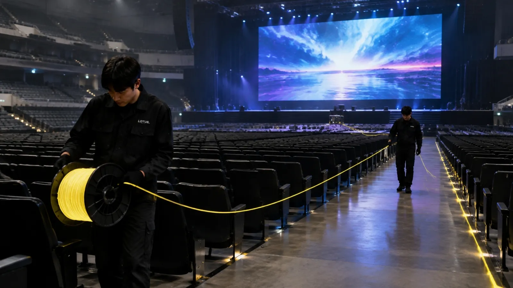

送信機
SDI を光に変えます。入力 1、中継 1。
LOTUS VISUAL JOURNAL / EQUIPMENT
客席の後ろから舞台袖へ。別棟のサブ会場へ。
長い距離を1本の細いケーブルで渡す、送信機と受信機の話です。

SDI を光に変えます。入力 1、中継 1。
方式(SM / MM)と端子(ST・DUO・QUAD)は、本体の型式末尾で決まります。
SDI に戻します。出力 2(同じ映像)。
01 / ONE LANE
送信機(TX)で SDI を光に変え、受信機(RX)で SDI に戻します。送れるのは 1 系統で、RX の 2 出力は同じ映像です。舞台から客席側へ返す映像が必要なら、別の経路を用意します。対応する信号は 3G-SDI(Level A/B)、HD-SDI、SD-SDI で、重畳音声も一緒に運びます。
12G 版や 2 系統版は別の機種です。型式は末尾まで照合します。
02 / MATCH THREE
光の方式(シングルモード / マルチモード)と端子の種類(ST、opticalCON DUO、opticalCON QUAD)は、本体を発注するときの型式末尾で決まっています。TX と RX と光ケーブルの 3 点がそろっていないと、物理的に差さらないか、差さっても届きません。出発前に 3 点の型式を照合し、合わない端子は無理につなぎません。
ここで扱う型式は送信機 XVVSDI2FIBERT1 と受信機 XVVFIBER2SDIT1 です。電源は AC100〜240V・15W で、PowerCON True1 入力です。メーカー同梱品は各本体と 1.5m の電源ケーブル(AC → True1)で、商用電源側のプラグは注文時指定です。光ケーブルと SDI ケーブルは、使う構成に合わせて別に手配します。補助コンセントは入力と同じ電圧で、上限 10A です。
xVision 3G-SDI 光伝送セットのページを見る ↗03 / ORDER OF WORK
手順はこうです。光伝送担当者が送り側の光出力の停止を確かめてから、光ケーブルをつなぎます(端面はのぞきません)。送り元を TX の SDI IN へ、受け側を RX の SDI OUT へつなぎます。電源担当者が供給電圧を照合して両機に給電します。設定メニューはなく、入力は自動で判別されます。最後に、実際に使う経路で映像と音声を確かめます。
途切れ・ノイズ・音声の欠落があれば本番での使用を止め、担当者が切り分けます。結露があるときは通電しません。使用環境は 0〜40℃、相対湿度 0〜90%(結露なし)です。
Q. 光ケーブルは何 m まで届きますか?
方式(SM / MM)とケーブルの種類で変わり、本体の公表値だけでは決まりません。会場の距離が分かれば、構成ごとにご案内します。
Q. 返しの映像も同じセットで送れますか?
1 セットは片方向 1 系統です。逆方向には、もう 1 セットか別の経路が必要です。
Q. 機器側の光の差込口も同じ記事で分かりますか?
差込口(パネルコネクター)は別の部品です。光ファイバーの「差込口」の記事 ↗ をご覧ください。
BEFORE THE LONG RUN
本文の数値と定義は、規格とメーカーの公表値によります。